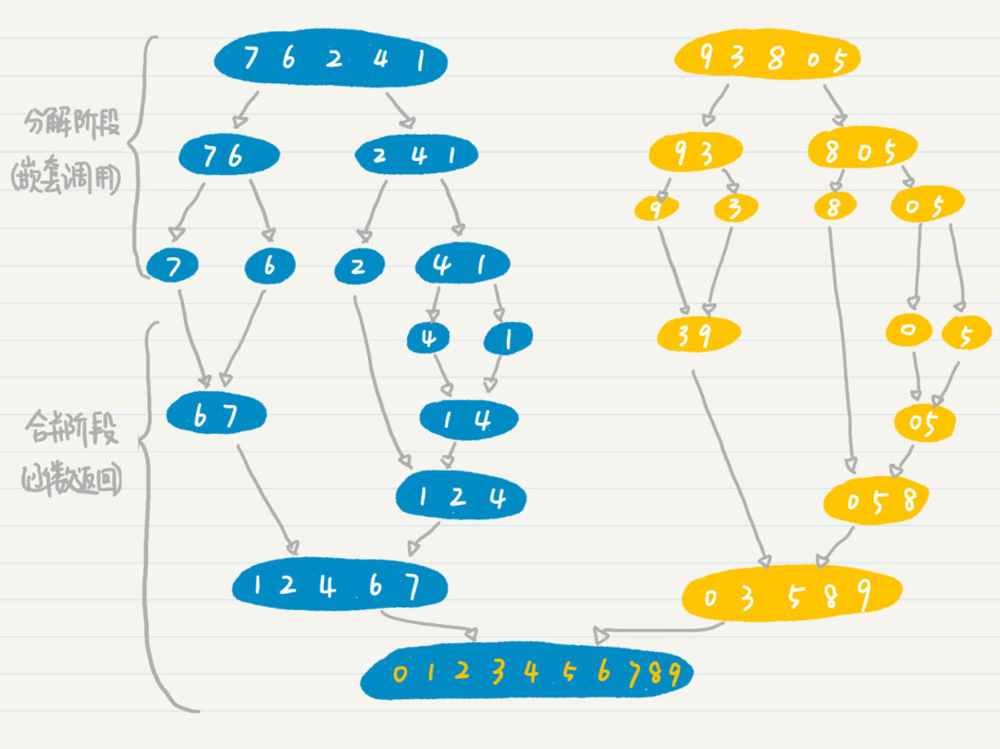

- 01 二进制：不了解计算机的源头，你学什么编程.md.html
- 02 余数：原来取余操作本身就是个哈希函数.md.html
- 03 迭代法：不用编程语言的自带函数，你会如何计算平方根？.md.html
- 04 数学归纳法：如何用数学归纳提升代码的运行效率？.md.html
- 05 递归（上）：泛化数学归纳，如何将复杂问题简单化？.md.html
- 06 递归（下）：分而治之，从归并排序到MapReduce.md.html
- 07 排列：如何让计算机学会“田忌赛马”？.md.html
- 08 组合：如何让计算机安排世界杯的赛程？.md.html
- 09 动态规划（上）：如何实现基于编辑距离的查询推荐？.md.html
- 10 动态规划（下）：如何求得状态转移方程并进行编程实现？.md.html
- 11 树的深度优先搜索（上）：如何才能高效率地查字典？.md.html
- 12 树的深度优先搜索（下）：如何才能高效率地查字典？.md.html
- 13 树的广度优先搜索（上）：人际关系的六度理论是真的吗？.md.html
- 14 树的广度优先搜索（下）：为什么双向广度优先搜索的效率更高？.md.html
- 15 从树到图：如何让计算机学会看地图？.md.html
- 16 时间和空间复杂度（上）：优化性能是否只是“纸上谈兵”？.md.html
- 17 时间和空间复杂度（下）：如何使用六个法则进行复杂度分析？.md.html
- 18 总结课：数据结构、编程语句和基础算法体现了哪些数学思想？.md.html
- 19 概率和统计：编程为什么需要概率和统计？.md.html
- 20 概率基础（上）：一篇文章帮你理解随机变量、概率分布和期望值.md.html
- 21 概率基础（下）：联合概率、条件概率和贝叶斯法则，这些概率公式究竟能做什么？.md.html
- 22 朴素贝叶斯：如何让计算机学会自动分类？.md.html
- 23 文本分类：如何区分特定类型的新闻？.md.html
- 24 语言模型：如何使用链式法则和马尔科夫假设简化概率模型？.md.html
- 25 马尔科夫模型：从PageRank到语音识别，背后是什么模型在支撑？.md.html
- 26 信息熵：如何通过几个问题，测出你对应的武侠人物？.md.html
- 27 决策树：信息增益、增益比率和基尼指数的运用.md.html
- 28 熵、信息增益和卡方：如何寻找关键特征？.md.html
- 29 归一化和标准化：各种特征如何综合才是最合理的？.md.html
- 30 统计意义（上）：如何通过显著性检验，判断你的A_B测试结果是不是巧合？.md.html
- 31 统计意义（下）：如何通过显著性检验，判断你的A_B测试结果是不是巧合？.md.html
- 32 概率统计篇答疑和总结：为什么会有欠拟合和过拟合？.md.html
- 33 线性代数：线性代数到底都讲了些什么？.md.html
- 34 向量空间模型：如何让计算机理解现实事物之间的关系？.md.html
- 35 文本检索：如何让计算机处理自然语言？.md.html
- 36 文本聚类：如何过滤冗余的新闻？.md.html
- 37 矩阵（上）：如何使用矩阵操作进行PageRank计算？.md.html
- 38 矩阵（下）：如何使用矩阵操作进行协同过滤推荐？.md.html
- 39 线性回归（上）：如何使用高斯消元求解线性方程组？.md.html
- 40 线性回归（中）：如何使用最小二乘法进行直线拟合？.md.html
- 41 线性回归（下）：如何使用最小二乘法进行效果验证？.md.html
- 42 PCA主成分分析（上）：如何利用协方差矩阵来降维？.md.html
- 43 PCA主成分分析（下）：为什么要计算协方差矩阵的特征值和特征向量？.md.html
- 44 奇异值分解：如何挖掘潜在的语义关系？.md.html
- 45 线性代数篇答疑和总结：矩阵乘法的几何意义是什么？.md.html
- 46 缓存系统：如何通过哈希表和队列实现高效访问？.md.html
- 47 搜索引擎（上）：如何通过倒排索引和向量空间模型，打造一个简单的搜索引擎？.md.html
- 48 搜索引擎（下）：如何通过查询的分类，让电商平台的搜索结果更相关？.md.html
- 49 推荐系统（上）：如何实现基于相似度的协同过滤？.md.html
- 50 推荐系统（下）：如何通过SVD分析用户和物品的矩阵？.md.html
- 51 综合应用篇答疑和总结：如何进行个性化用户画像的设计？.md.html
- 导读：程序员应该怎么学数学？.md.html
- 开篇词 作为程序员，为什么你应该学好数学？.md.html
- 数学专栏课外加餐（一） 我们为什么需要反码和补码？.md.html
- 数学专栏课外加餐（三）：程序员需要读哪些数学书？.md.html
- 数学专栏课外加餐（二） 位操作的三个应用实例.md.html
- 结束语 从数学到编程，本身就是一个很长的链条.md.html
- 捐赠
06 递归（下）：分而治之，从归并排序到MapReduce
你好，我是黄申。
上一节，我解释了如何使用递归，来处理迭代法中比较复杂的数值计算。说到这里，你可能会问了，有些迭代法并不是简单的数值计算，而要通过迭代的过程进行一定的操作，过程更加复杂，需要考虑很多中间数据的匹配或者保存。例如我们之前介绍的用二分查找进行数据匹配，或者我们今天将要介绍的归并排序中的数据排序等等。那么，这种情况下，还可以用递归吗？具体又该如何来实现呢？
我们可以先分析一下，这些看似很复杂的问题，是否可以简化为某些更小的、更简单的子问题来解决，这是一般思路。如果可以，那就意味着我们仍然可以使用递归的核心思想，将复杂的问题逐步简化成最基本的情况来求解。因此，今天我会从归并排序开始，延伸到多台机器的并行处理，详细讲讲递归思想在“分而治之”这个领域的应用。
归并排序中的分治思想
首先，我们来看，如何使用递归编程解决数字的排序问题。
对一堆杂乱无序的数字，按照从小到大或者从大到小的规则进行排序，这是计算机领域非常经典，也非常流行的问题。小到Excel电子表格，大到搜索引擎，都需要对一堆数字进行排序。因此，计算机领域的前辈们研究排序问题已经很多年了，也提出了许多优秀的算法，比如归并排序、快速排序、堆排序等等。其中，归并排序和快速排序都很好地体现了分治的思想，今天我来说说其中之一的归并排序（merge sort）。
很明显，归并排序算法的核心就是“归并”，也就是把两个有序的数列合并起来，形成一个更大的有序数列。
假设我们需要按照从小到大的顺序，合并两个有序数列A和B。这里我们需要开辟一个新的存储空间C，用于保存合并后的结果。
我们首先比较两个数列的第一个数，如果A数列的第一个数小于B数列的第一个数，那么就先取出A数列的第一个数放入C，并把这个数从A数列里删除。如果是B的第一个数更小，那么就先取出B数列的第一个数放入C，并把它从B数列里删除。
以此类推，直到A和B里所有的数都被取出来并放入C。如果到某一步，A或B数列为空，那直接将另一个数列的数据依次取出放入C就可以了。这种操作，可以保证两个有序的数列A和B合并到C之后，C数列仍然是有序的。
为了你能更好地理解，我举个例子说明一下，这是合并有序数组{1, 2, 5, 8}和{3, 4, 6}的过程。
为了保证得到有序的C数列，我们必须保证参与合并的A和B也是有序的。可是，等待排序的数组一开始都是乱序的，如果无法保证这点，那归并又有什么意义呢？
还记得上一篇说的递归吗？这里我们就可以利用递归的思想，把问题不断简化，也就是把数列不断简化，一直简化到只剩1个数。1个数本身就是有序的，对吧？
好了，现在剩下的疑惑就是，每一次如何简化问题呢？最简单的想法是，我们将长度为n的数列，每次简化为长度为n-1的数列，直至长度为1。不过，这样的处理没有并行性，要进行n-1次的归并操作，效率就会很低。
所以，我们可以在归并排序中引入了分而治之（Divide and Conquer）的思想。分而治之，我们通常简称为分治。它的思想就是，将一个复杂的问题，分解成两个甚至多个规模相同或类似的子问题，然后对这些子问题再进一步细分，直到最后的子问题变得很简单，很容易就能被求解出来，这样这个复杂的问题就求解出来了。
归并排序通过分治的思想，把长度为n的数列，每次简化为两个长度为n/2的数列。这更有利于计算机的并行处理，只需要log2n次归并。
我们把归并和分治的思想结合起来，这其实就是归并排序算法。这种算法每次把数列进行二等分，直到唯一的数字，也就是最基本的有序数列。然后从这些最基本的有序数列开始，两两合并有序的数列，直到所有的数字都参与了归并排序。
我用一个包含0～9这10个数字的数组，给你详细讲解一下归并排序的过程。
假设初始的数组为{7, 6, 2, 4, 1, 9, 3, 8, 0, 5}，我们要对它进行从小到大的排序。
第一次分解后，变成两个数组{7, 6, 2, 4, 1}和{9, 3, 8, 0, 5}。
然后，我们将{7, 6, 2, 4, 1}分解为{7, 6}和{2, 4, 1}，将{9, 3, 8, 0, 5}分解为{9, 3}和{8, 0, 5}。
如果细分后的组仍然多于一个数字，我们就重复上述分解的步骤，直到每个组只包含一个数字。到这里，这些其实都是递归的嵌套调用过程。
然后，我们要开始进行合并了。我们可以将{4, 1}分解为{4}和{1}。现在无法再细分了，我们开始合并。在合并的过程中进行排序，所以合并的结果为{1,4}。合并后的结果将返回当前函数的调用者，这就是函数返回的过程。
重复上述合并的过程，直到完成整个数组的排序，得到{0, 1, 2, 3, 4, 5, 6, 7, 8, 9}。
为了方便你的理解，我画了张图，给你解释整个归并排序的过程。
说到这里，我想问你，这个归并排序、分治和递归到底是什么关系呢？用一句话简单地说就是，归并排序使用了分治的思想，而这个过程需要使用递归来实现。
归并排序算法用分治的思想把数列不断地简化，直到每个数列仅剩下一个单独的数，然后再使用归并逐步合并有序的数列，从而达到将整个数列进行排序的目的。而这个归并排序，正好可以使用递归的方式来实现。为什么这么说？首先，我们来看看这张图，分治的过程是不是和递归的过程一致呢？
分治的过程可以通过递归来表达，因此，归并排序最直观的实现方式就是递归。所以，我们从递归的步骤出发，来看归并排序如何实现。
我们假设n=k-1的时候，我们已经对较小的两组数进行了排序。那我们只要在n=k的时候，将这两组数合并起来，并且保证合并后的数组仍然是有序的就行了。
所以，在递归的每次嵌套调用中，代码都将一组数分解成更小的两组，然后将这两个小组的排序交给下一次的嵌套调用。而本次调用只需要关心，如何将排好序的两个小组进行合并。
在初始状态，也就是n=1的时候，对于排序的案例而言，只包含单个数字的分组。由于分组里只有一个数字，所以它已经是排好序的了，之后就可以开始递归调用的返回阶段。我这里画了张图，便于你的理解。

你现在应该已经明白了归并排序的基本过程，最难的已经过去了，编写代码实现就不难了。我这里给出示范性代码，你可以参考看看。
import java.util.Arrays;
public class Lesson6_1 {
/**
* @Description: 使用函数的递归（嵌套）调用，实现归并排序（从小到大）
* @param to_sort-等待排序的数组
* @return int[]-排序后的数组
*/
public static int[] merge_sort(int[] to_sort) {
if (to_sort == null) return new int[0];
// 如果分解到只剩一个数，返回该数
if (to_sort.length == 1) return to_sort;
// 将数组分解成左右两半
int mid = to_sort.length / 2;
int[] left = Arrays.copyOfRange(to_sort, 0, mid);
int[] right = Arrays.copyOfRange(to_sort, mid, to_sort.length);
// 嵌套调用，对两半分别进行排序
left = merge_sort(left);
right = merge_sort(right);
// 合并排序后的两半
int[] merged = merge(left, right);
return merged;
}
}
这里要注意一下，在归并的步骤中，由于递归的调用确保了被合并的两个较小的数组是有序的，所以我们无需比较组内的数字，只需要比较组间的数字就行了。
这个合并过程具体的实现代码是这样的：
/**
* @Description: 合并两个已经排序完毕的数组（从小到大）
* @param a-第一个数组，b-第二个数组
* @return int[]-合并后的数组
*/
public static int[] merge(int[] a, int[] b) {
if (a == null) a = new int[0];
if (b == null) b = new int[0];
int[] merged_one = new int[a.length + b.length];
int mi = 0, ai = 0, bi = 0;
// 轮流从两个数组中取出较小的值，放入合并后的数组中
while (ai < a.length && bi < b.length) {
if (a[ai] <= b[bi]) {
merged_one[mi] = a[ai];
ai ++;
} else {
merged_one[mi] = b[bi];
bi ++;
}
mi ++;
}
// 将某个数组内剩余的数字放入合并后的数组中
if (ai < a.length) {
for (int i = ai; i < a.length; i++) {
merged_one[mi] = a[i];
mi ++;
}
} else {
for (int i = bi; i < b.length; i++) {
merged_one[mi] = b[i];
mi ++;
}
}
return merged_one;
}
上述两段代码的结合，就是归并排序的递归实现。你可以用这段代码进行测试：
public static void main(String[] args) {
int[] to_sort = {3434, 3356, 67, 12334, 878667, 387};
int[] sorted = Lesson6_1.merge_sort(to_sort);
for (int i = 0; i < sorted.length; i++) {
System.out.println(sorted[i]);
}
}
分布式系统中的分治思想
聊到这里，你应该已经了解归并排序算法是如何运作的了，也对分而治之的思想有了认识。不过，分而治之更有趣的应用其实是在分布式系统中。
例如，当需要排序的数组很大（比如达到1024GB的时候），我们没法把这些数据都塞入一台普通机器的内存里。该怎么办呢？有一个办法，我们可以把这个超级大的数据集，分解为多个更小的数据集（比如16GB或者更小），然后分配到多台机器，让它们并行地处理。
等所有机器处理完后，中央服务器再进行结果的合并。由于多个小任务间不会相互干扰，可以同时处理，这样会大大增加处理的速度，减少等待时间。
在单台机器上实现归并排序的时候，我们只需要在递归函数内，实现数据分组以及合并就行了。而在多个机器之间分配数据的时候，递归函数内除了分组及合并，还要负责把数据分发到某台机器上。
在这个框架图中，你应该可以看到，分布式集群中的数据切分和合并，同单台机器上归并排序的过程是一样的，因此也是使用了分治的思想。从理论的角度来看，上面这个图很容易理解。不过在实际运用中，有个地方需要注意一下。
上图中的父结点，例如机器1、2、3，它们都没有被分配排序的工作，只是在子结点的排序完成后进行有序数组的合并，因此集群的性能没有得到充分利用。那么，另一种可能的数据切分方式是，每台机器拿出一半的数据给另一台机器处理，而自己来完成剩下一半的数据。
如果分治的时候，只进行一次问题切分，那么上述层级型的分布式架构就可以转化为类似MapReduce的架构。我画出了MapReduce的主要步骤，你可以看看，这里面有哪些步骤体现了分治的思想？
这里面主要有三个步骤用到了分治的思想。
1. 数据分割和映射
分割是指将数据源进行切分，并将分片发送到Mapper上。映射是指Mapper根据应用的需求，将内容按照键-值的匹配，存储到哈希结构中。这两个步骤将大的数据集合切分为更小的数据集，降低了每台机器节点的负载，因此和分治中的问题分解类似。不过，MapReduce采用了哈希映射来分配数据，而普通的分治或递归不一定需要。
2.归约
归约是指接受到的一组键值配对，如果是键内容相同的配对，就将它们的值归并。这和本机的递归调用后返回结果的过程类似。不过，由于哈希映射的关系，MapReduce还需要洗牌的步骤，也就是将键-值的配对不断地发给对应的Reducer进行归约。普通的分治或递归不一定需要洗牌的步骤。
3.合并
为了提升洗牌阶段的效率，可以选择减少发送到归约阶段的键-值配对。具体做法是在数据映射和洗牌之间，加入合并的过程，在每个Mapper节点上先进行一次本地的归约。然后只将合并的结果发送到洗牌和归约阶段。这和本机的递归调用后返回结果的过程类似。
说了这么多，你现在对分治应该有比较深入的理解了。实际上，分治主要就是用在将复杂问题转化为若干个规模相当的小问题上。分治思想通常包括问题的细分和结果的合并，正好对应于递归编程的函数嵌套调用和函数结果的返回。细分后的问题交给嵌套调用的函数去解决，而结果合并之后交由函数进行返回。所以，分治问题适合使用递归来实现。同时，分治的思想也可以帮助我们设计分布式系统和并行计算，细分后的问题交给不同的机器来处理，而其中的某些机器专门负责收集来自不同机器的处理结果，完成结果的合并。
小结
这两节我们学习了递归法。递归采用了和数学归纳法类似的思想，但是它用的是逆向递推，化繁为简，把复杂的问题逐步简化。再加上分治原理，我们就可以更有效地把问题细分，进行并行化的处理。
而计算机编程中的函数嵌套调用，正好对应了数学中递归的逆向递推，所以你只要弄明白了数学递推式，就能非常容易的写出对应的递归编码。这是为什么递归在编程领域有着非常广泛的应用。不过，需要注意的是，递归编程在没有开始返回结果之前，保存了大量的中间结果，所以比较消耗系统资源。这也是一般的编程语言都会限制递归的深度（也就是嵌套的次数）的原因。
思考题
你有没有想过，在归并排序的时候，为什么每次都将原有的数组分解为两组，而不是更多组呢？如果分为更多组，是否可行？
欢迎在留言区交作业，并写下你今天的学习笔记。你可以点击“请朋友读”，把今天的内容分享给你的好友，和他一起精进。
© 2019 - 2023 Liangliang Lee. Powered by gin and hexo-theme-book.